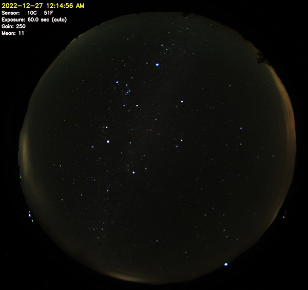
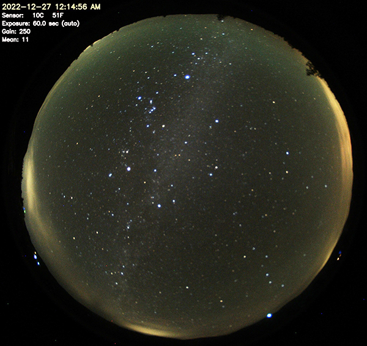
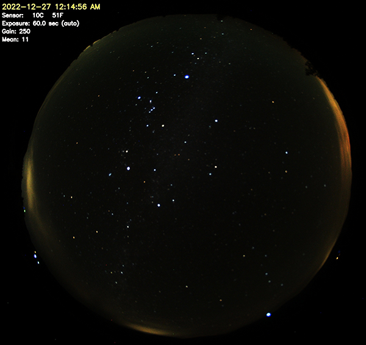
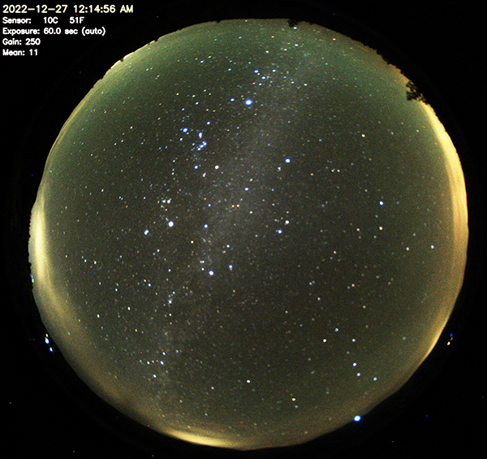

There are several settings that determine what an image looks like - how bright it is,
how colorful it is, and its color balance.
The WebUI lets you manually set those settings, or have them automatically set by the software.
Image Brightness
If you've every used a film or DSLR camera, you know the concepts of shutter speed and ISO. With an allsky camera the shutter speed is called Exposure and the ISO is called Gain, and they work together to determine the final image brightness. If you take a picture at some exposure and gain, then halve the exposure and double the gain, you should get a second picture of the same brightness as the first, but slightly noisier since increasing gain or ISO increases the salt-and-pepper like noise. If you have a manual camera you can set the shutter speed and ISO to any value you want, but what if your camera (or allsky camera) automatically sets those values but you want an image that's brighter or dimmer? In Allsky you can set the Mean Target to change what settings the auto-exposure algorithm uses.
Increasing that value, which ranges from 0.0 (pure black) to 1.0 (pure white), increases the overall brightness of the image.
Image Color
If your sky looks green instead of blue, your color balance is off. This is also called white balance because it can be easier to determine which way the color is off by looking at something white.
On color cameras you can turn on Auto White Balance in the WebUI to have the camera set the white balance, but you may not like the results. You can also manually set the Red Balance and Blue Balance to get a picture of your liking (there is no Green Balance because you can adjust the amount of green in an image by adjusting the amount of red and blue).
We suggest trying Auto White Balance during the day and if you don't like the results, turn it off and set the red and blue balance manually. You can change the Auto White Balance and red and blue balances separately for daytime and nighttime.
You may not want to disable Auto White Balance at night since it may significantly increase the total time needed to get one picture. Some camera's auto white balance algorithm works by taking several pictures in a row, and if each picture is 60 seconds you may wait 3 minutes for each picture. If in doubt, enable Auto White Balance at night and see what happens.
Saturation (RPi cameras only)
Saturation determines how vivid the colors are, from black and white to very vivid (usually to the point where the colors look unnatural). To change saturation, use the Saturation setting in the WebUI. The middle point is "normal" saturation, but you may like more or less. If you want a black and white image, set the Saturation to its lowest value.
Stretch
Stretching an image changes its contrast (difference between light and dark) and is good to bring out details in pictures. There are separate stretch settings for daytime and nighttime that work the same (daytime stretching is not very common). The stretch-related settings are:
- Stretch Amount
(default: 0 which disables stretching)
3 is typical and 20 is a lot. Higher numbers lighten the image more. - Stretch mid point
(default: 10)
This specifies what part of the image should be lightened: 0 lightens black items, 50 lightens middle-gray items, and 100 lightens white items.
Sample Stretch Images
Stretch Amount: 0
The exposure is 60 seconds; anything longer will produce streaks with
most lenses.
The gain is 250 which is near the maximum for the camera,
and is already producing some noise.

Stretch Amount: 10,
Stretch mid point: 10
Notice the dark parts of the image are much brighter,
and the light stars are only a little brighter
(but the dark stars are much brighter and easier to see).

Stretch Amount: 10,
Stretch mid point: 30
Notice a very slight overall increase in brightness,
but a noticable increase in brightness of the stars.

Stretch Amount: 20,
Stretch mid point: 10
Compare this image to the
Stretch Amount: 10
image;
this one is even brighter.
